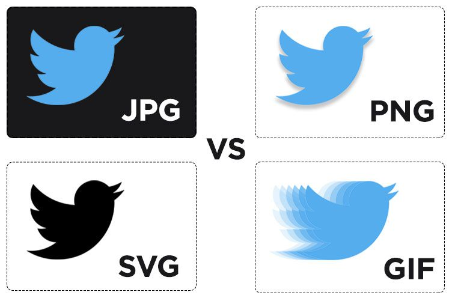

| Fondos de color | Fondos de imágen |
|---|---|
|  |
Para incluir un fondo en una página web necesitamos utilizar el atributo background en la etiqueta "BODY", al que le asignamos el nombre del archivo que deseamos utilizar como fondo. Si el archivo se encuentra en un directorio distinto que la página web, necesitaremos incluir la ruta al archivo, teniendo en cuenta siempre de utilizar una ruta relativa al archivo .html para que se conserve la ruta en caso de que cambiemos el sitio web de localización.
body background="fondo.gif"
Lo que conseguimos con esto es que el archivo fondo.gif se muestre en la página como fondo. Por defecto, la imagen de fondo aparece como un mosaico, repitiéndose a lo largo de todo el espacio de la página.
No solo la página puede tener un fondo, también lo podemos colocar a las tablas o las celdas, por ejemplo. Se utiliza el mismo atributo background, aunque aplicado a otras etiquetas.
table background="fondo.gif"
td background="fondo.gif"
Estos dos elementos (tablas y celdas), junto con el propio cuerpo de la página, eran los que permitían fondos en la web antes de existir el lenguaje CSS. Pero hoy, como veremos enseguida, con CSS podemos colocar fondos en casi cualquier elemento que tengas en tu página.
|
|
| |
|
|